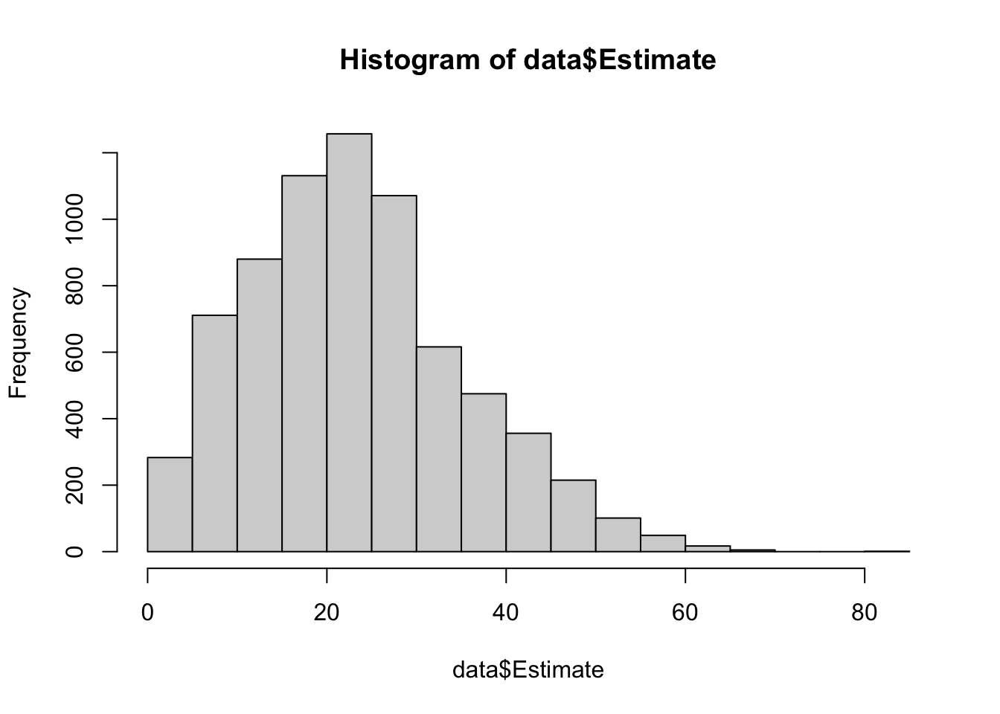
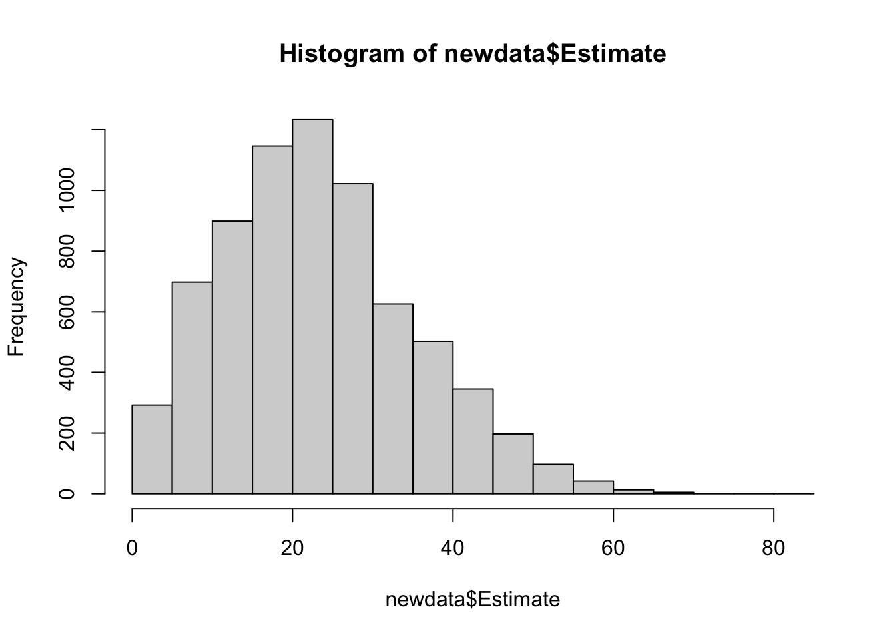

Warning: package 'ggplot2' was built under R version 4.3.3
── Attaching core tidyverse packages ──────────────────────── tidyverse 2.0.0 ──
✔ dplyr 1.1.2 ✔ readr 2.1.4
✔ forcats 1.0.0 ✔ stringr 1.5.0
✔ ggplot2 3.5.1 ✔ tibble 3.2.1
✔ lubridate 1.9.2 ✔ tidyr 1.3.0
✔ purrr 1.0.1
── Conflicts ────────────────────────────────────────── tidyverse_conflicts() ──
✖ dplyr::filter() masks stats::filter()
✖ dplyr::lag() masks stats::lag()
ℹ Use the conflicted package (<http://conflicted.r-lib.org/>) to force all conflicts to become errors
# CDC data of the percent of the population over 60 covered by RSV vaccine. Estimate is the percent vaccinated in the week for the specified state.# Read datadata <-read.csv("rsv.csv", comment.char="#")# Fiter to only include state level data and filter out NAsdata <- data %>%filter(Geographic.Level =='State') %>%filter(!(is.na(Estimate)))# Histogram of the estimates. Looks to be fairly normalhist(data$Estimate)

# Mean of estimatemean(data$Estimate)
[1] 23.28765
# Standard deviation of estimatesd(data$Estimate)
[1] 12.02931
# Percentage of statedata %>%group_by(Geographic.Name) %>%summarise(percent =100*n() /7168)
# A tibble: 54 × 2
Geographic.Name percent
<chr> <dbl>
1 Alabama 2.19
2 Alaska 1.80
3 Arizona 2.13
4 Arkansas 1.86
5 California 2.13
6 Colorado 2.08
7 Connecticut 1.02
8 Delaware 2.02
9 District of Columbia 2.19
10 Florida 2.13
# ℹ 44 more rows
# Percentage of weeksdata %>%group_by(Week_ending) %>%summarise(percent =100*n() /7168)
# A tibble: 33 × 2
Week_ending percent
<chr> <dbl>
1 01/06/2024 12:00:00 AM 3.57
2 01/13/2024 12:00:00 AM 3.57
3 01/20/2024 12:00:00 AM 3.29
4 01/27/2024 12:00:00 AM 3.29
5 02/03/2024 12:00:00 AM 3.52
6 02/10/2024 12:00:00 AM 3.07
7 02/17/2024 12:00:00 AM 3.07
8 02/24/2024 12:00:00 AM 3.12
9 03/02/2024 12:00:00 AM 3.57
10 03/09/2024 12:00:00 AM 3.18
# ℹ 23 more rows
THIS PART CONTRIBUTED TO BY ANTONIO FLORES
Now we will generate some synthetic data using a tool called Synthpop
“Most commonly variables are synthesised one-by-one using sequential regression modelling. This means that conditional distributions, from which synthetic values are drawn, are defined for each variable separately and they are conditioned on the original variables that are earlier in the synthesis sequence.”
library(synthpop) # Primary library needed for creating Synthetic Data
Warning: package 'synthpop' was built under R version 4.3.3
Find out more at https://www.synthpop.org.uk/
library(dplyr)
subset = data %>%select(Geographic.Name, Estimate, Unweighted.Sample.Size, CI_Half_width_90pct, CI_Half_width_95pct) %>%mutate(Geographic.Name =as.factor(Geographic.Name))
codebook.syn(subset)
$tab
variable class nmiss perctmiss ndistinct details
1 Geographic.Name factor 0 0 54 See table in labs
2 Estimate numeric 0 0 4952 Range: 0 - 80.1319
3 Unweighted.Sample.Size integer 0 0 323
4 CI_Half_width_90pct numeric 0 0 4885 Range: 0 - 30.2338
5 CI_Half_width_95pct numeric 0 0 4901 Range: 0 - 36.0233
$labs
$labs$Geographic.Name
label
1 Alabama
2 Alaska
3 Arizona
4 Arkansas
5 California
6 Colorado
7 Connecticut
8 Delaware
9 District of Columbia
10 Florida
11 Georgia
12 Guam
13 Hawaii
14 Idaho
15 Illinois
16 Indiana
17 Iowa
18 Kansas
19 Kentucky
20 Louisiana
21 Maine
22 Maryland
23 Massachusetts
24 Michigan
25 Minnesota
26 Mississippi
27 Missouri
28 Montana
29 Nebraska
30 Nevada
31 New Hampshire
32 New Jersey
33 New Mexico
34 New York
35 North Carolina
36 North Dakota
37 Ohio
38 Oklahoma
39 Oregon
40 Pennsylvania
41 Puerto Rico
42 Rhode Island
43 South Carolina
44 South Dakota
45 Tennessee
46 Texas
47 Utah
48 Vermont
49 Virgin Islands
50 Virginia
51 Washington
52 West Virginia
53 Wisconsin
54 Wyoming
Creating Synthetic Data
new_seed =2024# Setting our seed at a random valuesynthetic_data =syn(subset, seed = new_seed) #This will give us our synthetic dataset
Variables CI_Half_width_90pct, CI_Half_width_95pct are collinear. Variables later in 'visit.sequence'
are derived from CI_Half_width_90pct.
Synthesis
-----------
Geographic.Name Estimate Unweighted.Sample.Size CI_Half_width_90pct CI_Half_width_95pct
#cleaning the synthetic datasetsynth_data_clean =sdc(synthetic_data, subset, label ="FAKE DATA",rm.replicated.uniques =TRUE)
no. of replicated uniques: 50
This is important! Sometimes, when we create “fake” synthetic data, we happen to recreate an actual observation in the original data set. So, in the name of privacy, we remove those observations. In this exercise, our synthetic data created 50 “fake” entries that actually had a match with real observations in the original data set.
newdata = synth_data_clean$syn# Histogram of the estimates. Looks to be fairly normalhist(newdata$Estimate)

# Mean of estimatemean(newdata$Estimate)
[1] 23.11207
# Standard deviation of estimatesd(newdata$Estimate)
[1] 11.94228
# Percentage of statenewdata %>%group_by(Geographic.Name) %>%summarise(percent =100*n() /7168)
# A tibble: 54 × 2
Geographic.Name percent
<fct> <dbl>
1 Alabama 2.12
2 Alaska 1.93
3 Arizona 1.95
4 Arkansas 2.30
5 California 2.08
6 Colorado 2.02
7 Connecticut 1.13
8 Delaware 2.04
9 District of Columbia 2.08
10 Florida 2.25
# ℹ 44 more rows
Conclusions:
Firstly, I had to subset the columns into just one categorical because the Synthpop tool was taking an egregious amount of time to load (which makes sense).
Second, the data looks to have many of the same distributions for the specified variable (Estimate). The Histograms visually seem to be very similar, both means are at 23, and the standard deviations are fairly close (12.0, 11.9).